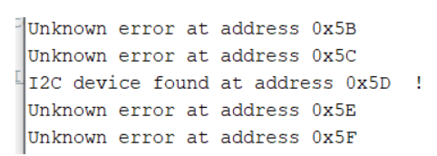
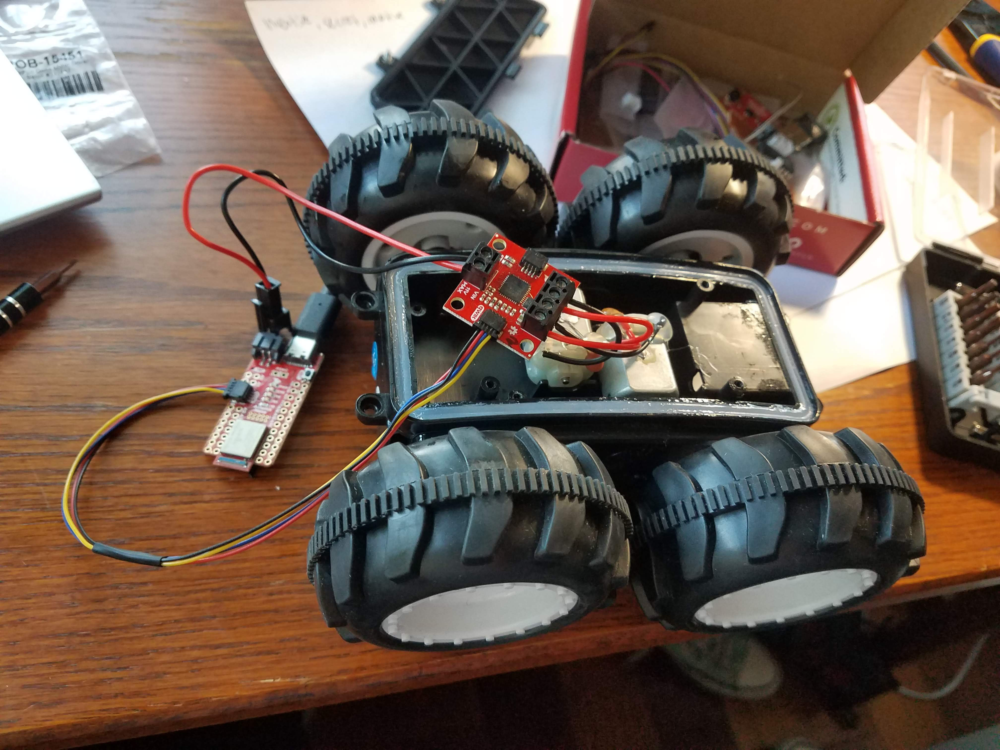

Get the motors running on the robot with our motor controller, simulate in a virtual environment
Materials Used
1 RC Car
1 Artemis Nano
1 USB A/C Cable
2 batteries (car battery, board battery)
1 Sparkfun motor driver
1 Qwiic connector
2 screwdrivers (flathead and phillips)
1 wire stripper/cutter
Procedure
4A: Open Loop Control (Real)
First, I connected the Artemis board to the supplied motor driver board using a Qwiic cable
Next, I loaded up the software example "Example1_wire" to scan the i2c bus for a component, and found it at 0x5D.

Next, I took apart the RC car by unscrewing the top, disconnecting the control PCB, and cutting all the leads off that.
I stripped the DC motor connector wires and screwed them into the motor controller terminals, and did the same for the battery connector. I did have to do some "refactoring" of the hot glue with a heat gun so the DC motor cables didn't rip off.

Next, I plugged the battery in, installed the SCMD library in Arduino, and pulled up the MotorTest script. I had to change the code a bit, first by adding the correct i2c address as found above, and then by setting i=2 for the number of motors. They both ran from this script as shown below
4A: Open Loop Control (Simulated)
Next, I set up the lab4 simulator the same way I did in lab 3, and started up jupyter labs in a terminal, which brought me to the lab4 jupyter notebook.